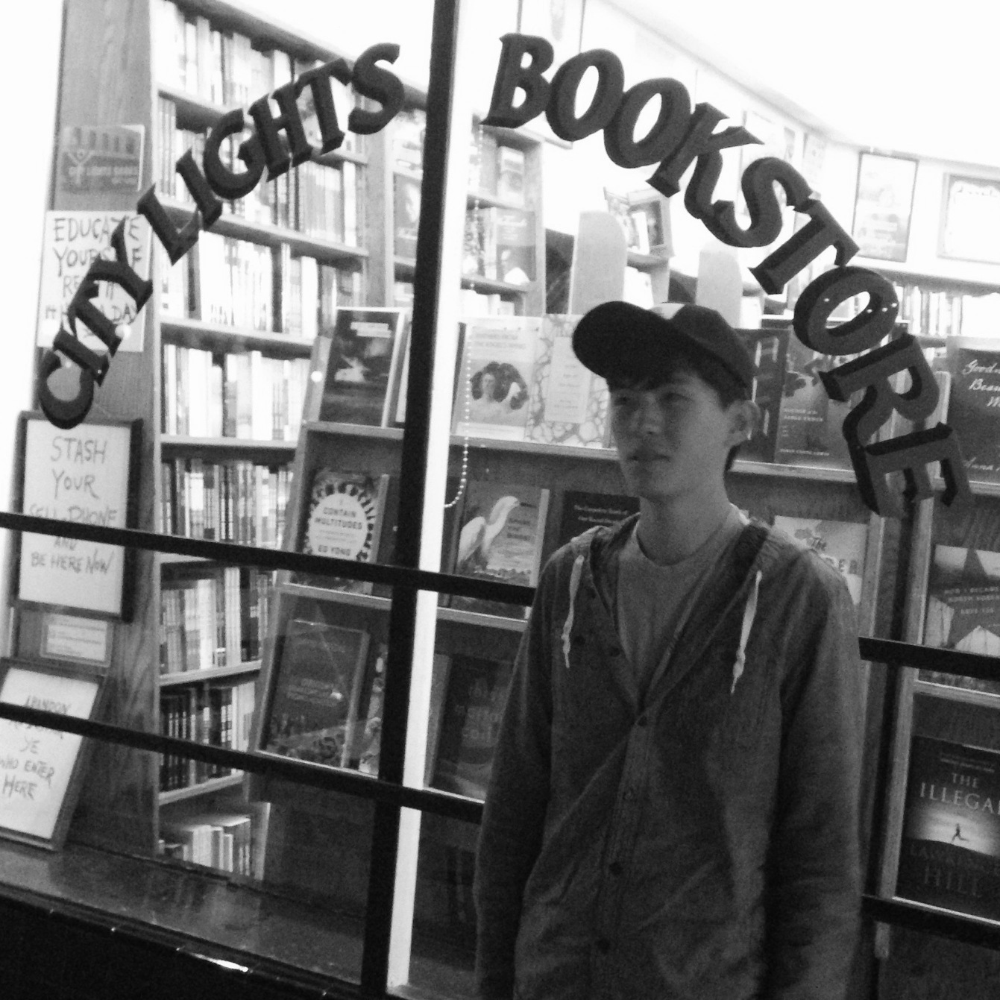
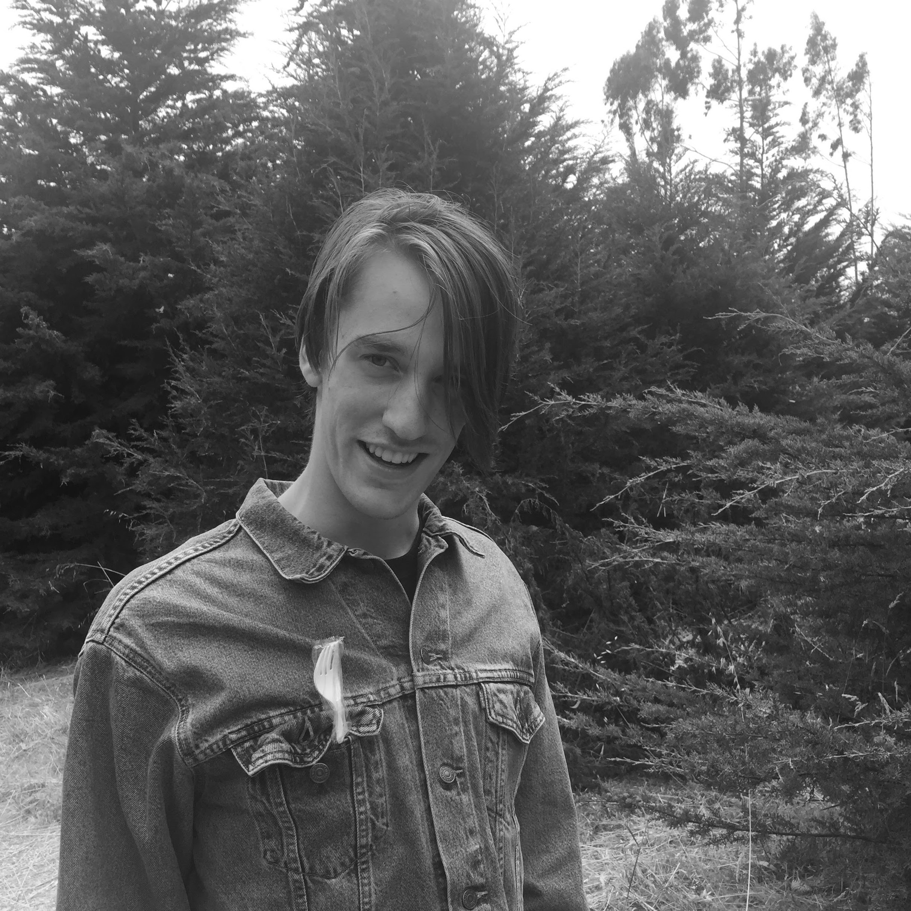
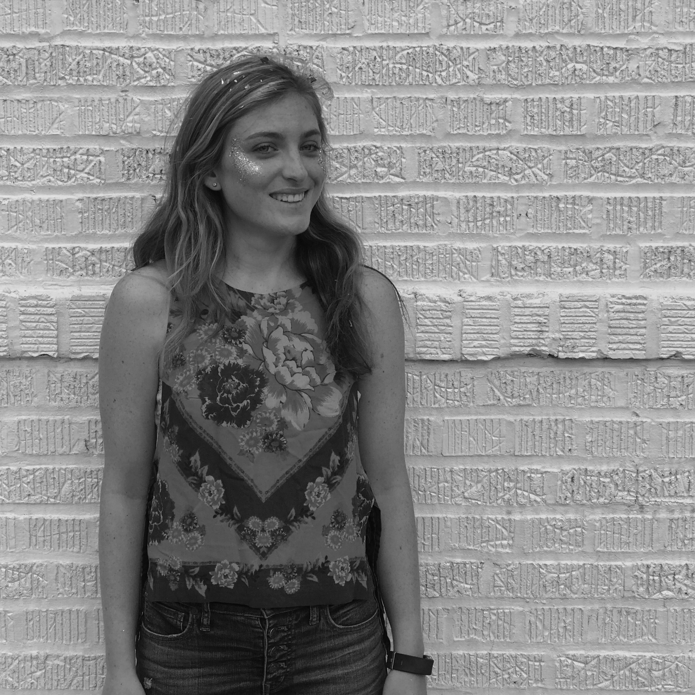
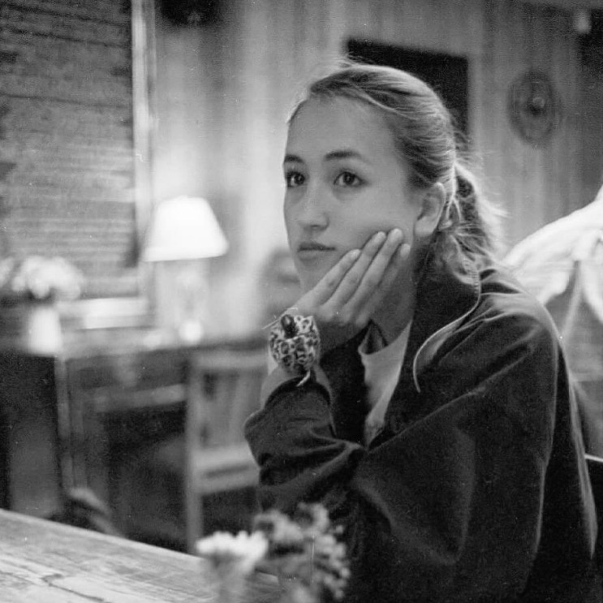
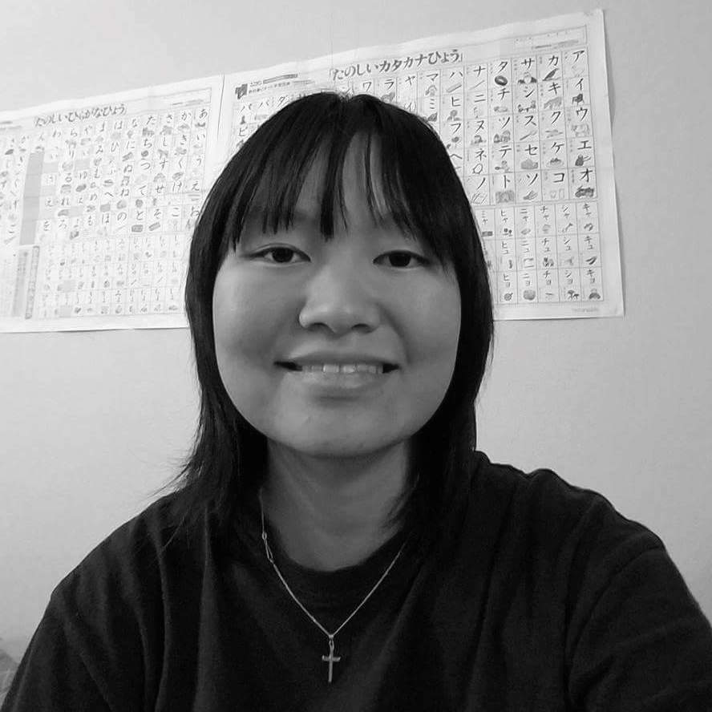
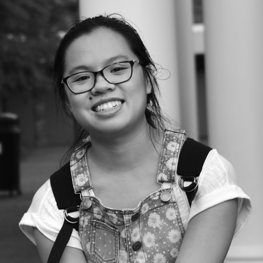

Zeniada accepts poetry (including prose poetry) and artwork. All submissions are judged anonymously. Anyone who is enrolled in an undergraduate program for the current school year is welcome to submit.
Zeniada is currently seeking submissions for Spring 2018. Please email poetry and artwork to submit@zeniada.com.
Submission Guidelines
The subject of your email should be the category of your work (i.e. "Poetry" or "Art").
In the body of the email, please include:
Your name
Your expected year of graduation
The name of the undergraduate school you currently attend
If you're submitting artwork, the medium/media used
Any special instructions or comments regarding your work
If you are submitting poetry, please attach your work as a Word document. Your name, school, or any other type of identification should not appear anywhere in this document.
Any questions regarding submissions can be sent to ask@zeniada.com.
Join
The positions listed below are currently open for the Spring 2018 semester. Applicants must be currently pursuing an undergraduate degree at Johns Hopkins University.
Editor: attends weekly meetings (1 to 1.5 hours long) to review, discuss, and select submissions. May be required to read said submissions outside of meetings.
Finance Manager: responsible for keeping track of Zeniada’s budget as well as all other financially-related tasks, including applying for grants, handling purchases of magazines or workshop materials, and recording those purchases.
Communications Manager: Sends informational/promotional emails to relevant departments at other universities. Responsible for sending individualized decision emails to submitters for each issue.
Marketing Manager: runs all social media for Zeniada, particularly the Facebook page. Responsible for creating and inviting students to Facebook events (such as submission events or workshop events); adding promotional graphics/messages to the Facebook page; and submitting posts to the Daily Announcements and distributing flyers across campus.
Apply for positions here. All applications are due by Friday, January 26, 2018.
Allison is a Writing Seminars major from Holmdel, New Jersey. She loves television, writing, writing about television, Chipotle, minimalism, and a lot of other stuff.

Alan FangSenior Editor
Alan is a sophomore Writing Seminars major from Westfield, New Jersey who enjoys the Beat Generation, strawberries, existential philosophy, and bubble tea, among other things.

Joel BangerterEditor
Joel is a Sophomore English major from Utah. He enjoys reading, knitting, and walking his dog, Goosey.

Stephanie HaennEditor
Steph is a Writing Seminars and International Studies double major from Philadelphia.

Nicola Sumi KimEditor
Sumi is a Writing Seminars / Global Environmental Change and Sustainability major who lives in London, UK. She's mostly interested in writing, The Beatles, and finally perfecting playing her kazoo (she's not close).

Grace Takeda Editor
Grace is a Writing Seminars major from California who enjoys writing, reading, playing the piano and violin, and listening to Phoenix in her spare time.

Vivian TsaiLayout, Webmaster
Vivian studies computer science and applied math. When she's not busy throwing shade at writer's block, she's eating food, quoting Star Wars, or listening to the Hamilton soundtrack nonstop.
 Zeniada is an intercollegiate poetry and art magazine based at Johns Hopkins University.
Zeniada is an intercollegiate poetry and art magazine based at Johns Hopkins University.